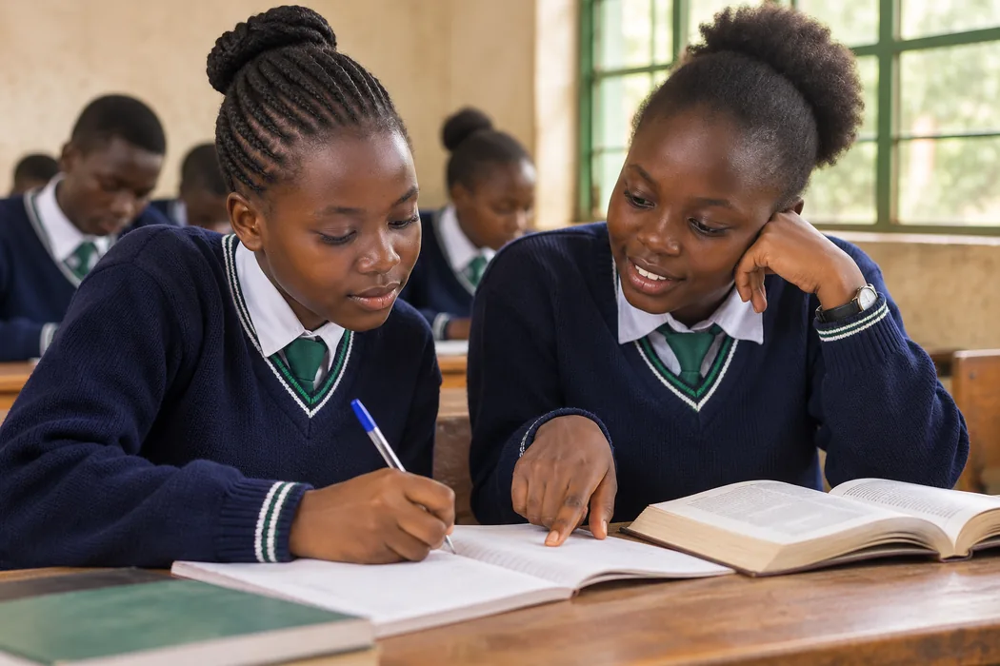

What to bring
Check your joining instructions for uniform, bedding, personal items, and any restrictions. Label belongings before you travel.
Our joining instructions are the starting point for preparing to live at school. Read them together at home and raise any questions before reporting day.
Open the reporting checklist
Check your joining instructions for uniform, bedding, personal items, and any restrictions. Label belongings before you travel.
Ask our office about visiting arrangements, approved ways to contact your child, and how to arrange arrival or collection.
Speak with us before reporting if your child needs help with medication, diet, accessibility, or learning. Ask which documents to bring and who should receive them.
School life
Drama & media
Our school had an entry in the advert category of the 2019 national secondary school drama festival.
County sports
In March 2026, our school was designated to accommodate visiting girls’ teams during the Makueni secondary schools games.
Community
Our partnership with the NURU Initiative began in October 2025.
See photos of our school communityOur school office can help with this term’s clubs, teams, and activity schedule.